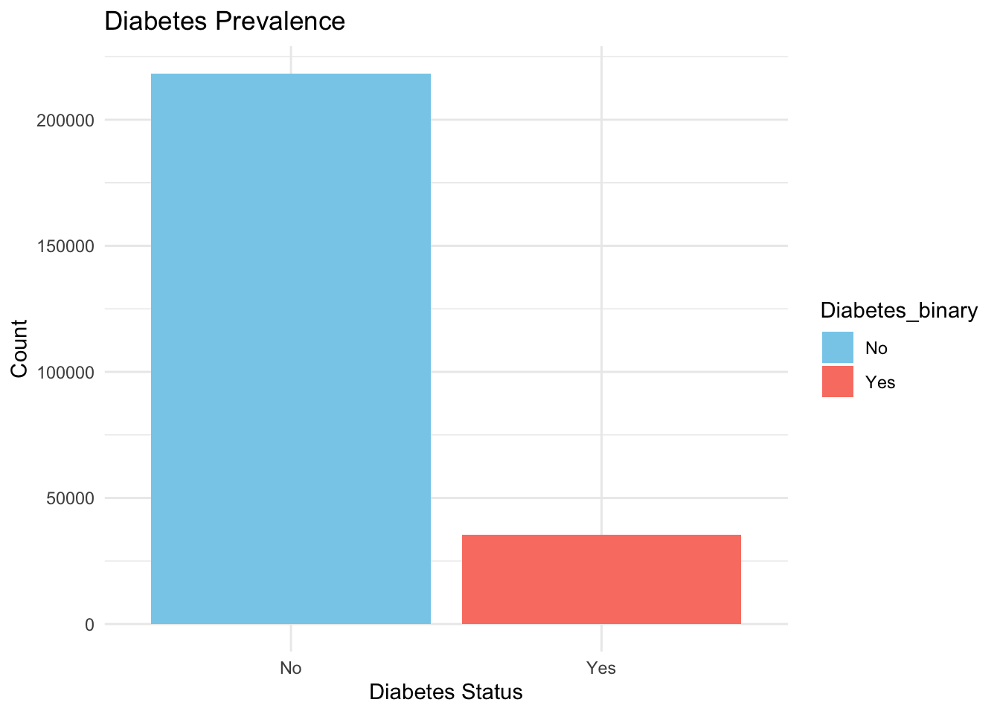
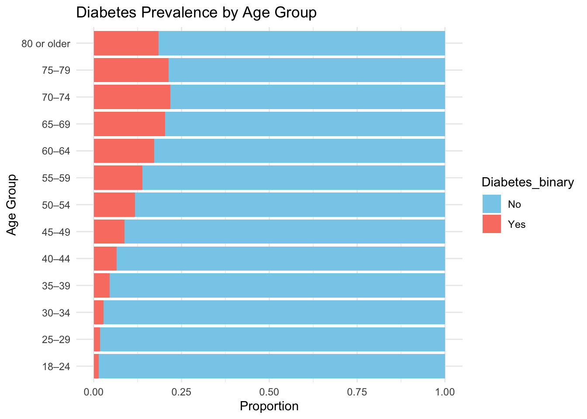
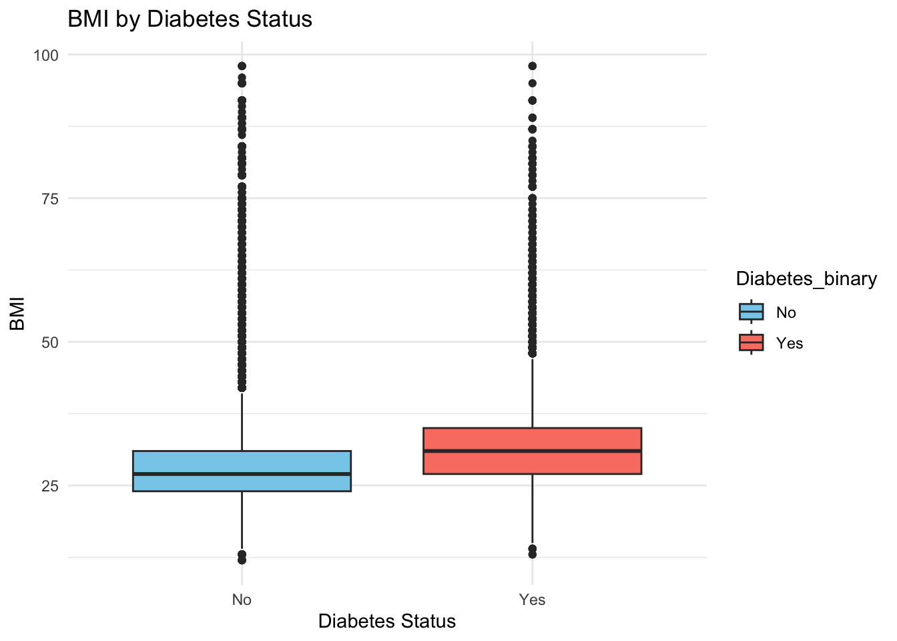
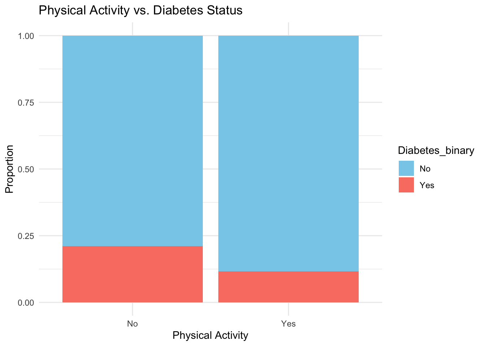
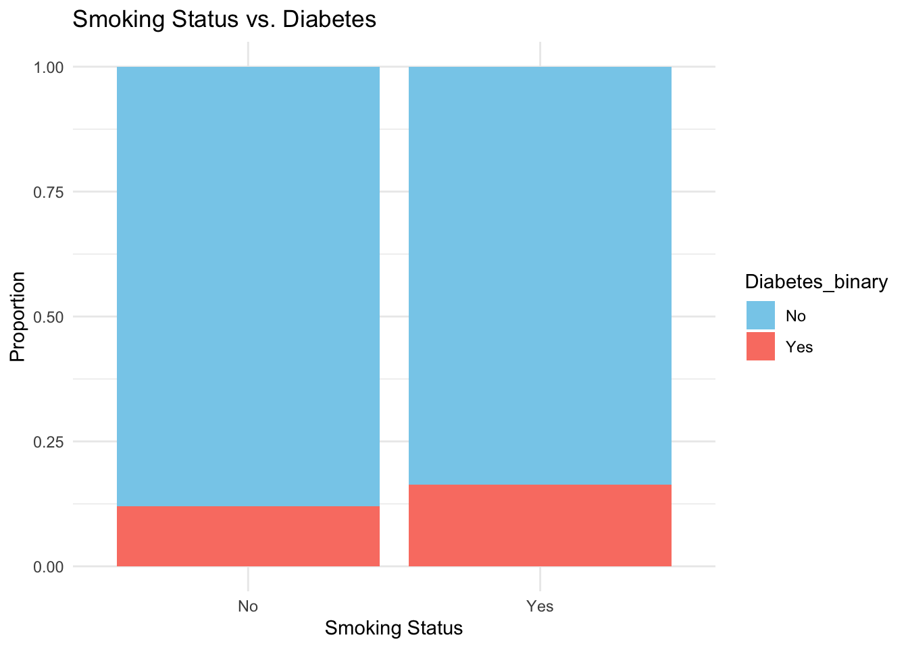
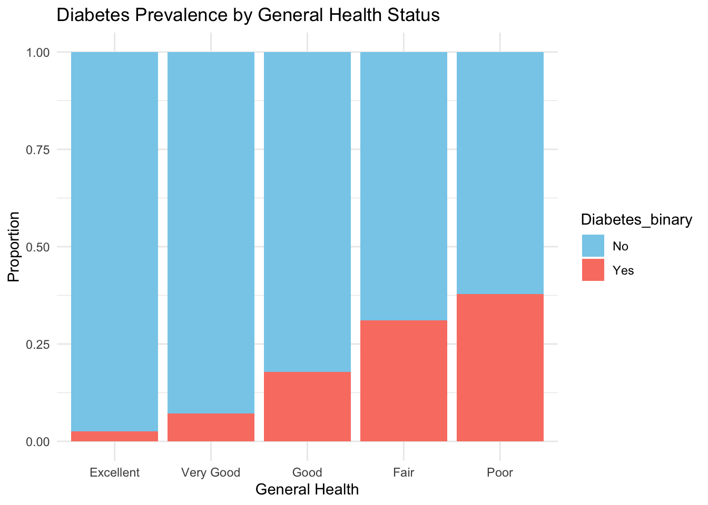
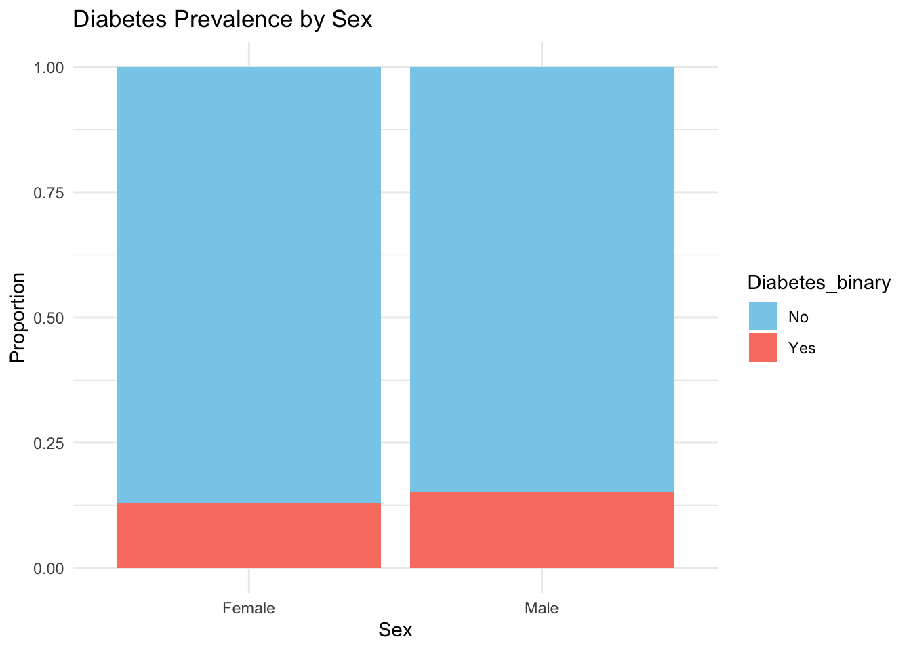
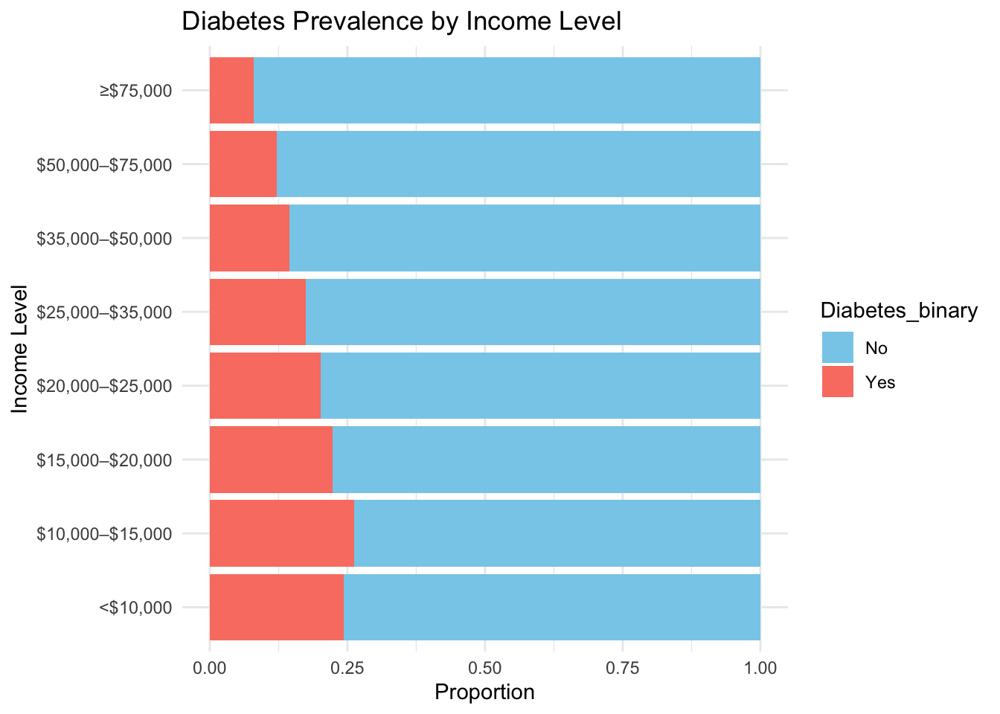

The Diabetes Health Indicators Dataset is derived from the Behavioral Risk Factor Surveillance System (BRFSS) 2015 survey. It includes different health-related variables collected from adults in the USA. The dataset is useful for analyzing factors that may indicate diabetes among the population.
Purpose of EDA: The primary goal of this exploratory data analysis is to understand the relationships between different health indicators and the presence of diabetes. By examining patterns and correlations in the data, we aim to identify key predictors that can be used in a predictive modeling to classify individuals as diabetic or non-diabetic.
Data Description
Diabetes_binary: Indicates diabetes status (0 = No diabetes, 1 = Diabetes).
HighBP: High blood pressure (0 = No, 1 = Yes).
HighChol: High cholesterol (0 = No, 1 = Yes).
CholCheck: Cholesterol check in the past 5 years (0 = No, 1 = Yes).
BMI: Body Mass Index.
Smoker: Has smoked at least 100 cigarettes in their entire life (0 = No, 1 = Yes).
Stroke: Ever had a stroke (0 = No, 1 = Yes).
HeartDiseaseorAttack: Coronary heart disease (CHD) or myocardial infarction (MI) (0 = No, 1 = Yes).
PhysActivity: Physical activity in the past 30 days (0 = No, 1 = Yes).
Fruits: Consumes fruit 1 or more times per day (0 = No, 1 = Yes).
Veggies: Consumes vegetables 1 or more times per day (0 = No, 1 = Yes).
HvyAlcoholConsump: Heavy alcohol consumption (0 = No, 1 = Yes).
AnyHealthcare: Has any kind of health care coverage (0 = No, 1 = Yes).
NoDocbcCost: Could not see a doctor due to cost in the past 12 months (0 = No, 1 = Yes).
GenHlth: General health status (1 = Excellent to 5 = Poor).
MentHlth: Number of days mental health was not good (0–30 days).
PhysHlth: Number of days physical health was not good (0–30 days).
DiffWalk: Difficulty walking or climbing stairs (0 = No, 1 = Yes).
Sex: Sex of respondent (0 = Female, 1 = Male).
Age: Age category (1 = 18–24 to 13 = 80 or older).
Education: Education level (1 = No schooling to 6 = College graduate).
Income: Income level (1 = <$10,000 to 8 = ≥$75,000).
Data Import and Preparation
We begin by loading the necessary libraries and importing the dataset using a relative path.
# Load necessary librarieslibrary(tidyverse)
── Attaching core tidyverse packages ──────────────────────── tidyverse 2.0.0 ──
✔ dplyr 1.1.4 ✔ readr 2.1.5
✔ forcats 1.0.0 ✔ stringr 1.5.1
✔ ggplot2 3.5.1 ✔ tibble 3.2.1
✔ lubridate 1.9.3 ✔ tidyr 1.3.1
✔ purrr 1.0.2
── Conflicts ────────────────────────────────────────── tidyverse_conflicts() ──
✖ dplyr::filter() masks stats::filter()
✖ dplyr::lag() masks stats::lag()
ℹ Use the conflicted package (<http://conflicted.r-lib.org/>) to force all conflicts to become errors
library(ggplot2)library(ggcorrplot)
# Import the datasetdata <-read_csv("diabetes_binary_health_indicators_BRFSS2015.csv")
Rows: 253680 Columns: 22
── Column specification ────────────────────────────────────────────────────────
Delimiter: ","
dbl (22): Diabetes_binary, HighBP, HighChol, CholCheck, BMI, Smoker, Stroke,...
ℹ Use `spec()` to retrieve the full column specification for this data.
ℹ Specify the column types or set `show_col_types = FALSE` to quiet this message.
Diabetes_binary HighBP HighChol CholCheck
Min. :0.0000 Min. :0.000 Min. :0.0000 Min. :0.0000
1st Qu.:0.0000 1st Qu.:0.000 1st Qu.:0.0000 1st Qu.:1.0000
Median :0.0000 Median :0.000 Median :0.0000 Median :1.0000
Mean :0.1393 Mean :0.429 Mean :0.4241 Mean :0.9627
3rd Qu.:0.0000 3rd Qu.:1.000 3rd Qu.:1.0000 3rd Qu.:1.0000
Max. :1.0000 Max. :1.000 Max. :1.0000 Max. :1.0000
BMI Smoker Stroke HeartDiseaseorAttack
Min. :12.00 Min. :0.0000 Min. :0.00000 Min. :0.00000
1st Qu.:24.00 1st Qu.:0.0000 1st Qu.:0.00000 1st Qu.:0.00000
Median :27.00 Median :0.0000 Median :0.00000 Median :0.00000
Mean :28.38 Mean :0.4432 Mean :0.04057 Mean :0.09419
3rd Qu.:31.00 3rd Qu.:1.0000 3rd Qu.:0.00000 3rd Qu.:0.00000
Max. :98.00 Max. :1.0000 Max. :1.00000 Max. :1.00000
PhysActivity Fruits Veggies HvyAlcoholConsump
Min. :0.0000 Min. :0.0000 Min. :0.0000 Min. :0.0000
1st Qu.:1.0000 1st Qu.:0.0000 1st Qu.:1.0000 1st Qu.:0.0000
Median :1.0000 Median :1.0000 Median :1.0000 Median :0.0000
Mean :0.7565 Mean :0.6343 Mean :0.8114 Mean :0.0562
3rd Qu.:1.0000 3rd Qu.:1.0000 3rd Qu.:1.0000 3rd Qu.:0.0000
Max. :1.0000 Max. :1.0000 Max. :1.0000 Max. :1.0000
AnyHealthcare NoDocbcCost GenHlth MentHlth
Min. :0.0000 Min. :0.00000 Min. :1.000 Min. : 0.000
1st Qu.:1.0000 1st Qu.:0.00000 1st Qu.:2.000 1st Qu.: 0.000
Median :1.0000 Median :0.00000 Median :2.000 Median : 0.000
Mean :0.9511 Mean :0.08418 Mean :2.511 Mean : 3.185
3rd Qu.:1.0000 3rd Qu.:0.00000 3rd Qu.:3.000 3rd Qu.: 2.000
Max. :1.0000 Max. :1.00000 Max. :5.000 Max. :30.000
PhysHlth DiffWalk Sex Age
Min. : 0.000 Min. :0.0000 Min. :0.0000 Min. : 1.000
1st Qu.: 0.000 1st Qu.:0.0000 1st Qu.:0.0000 1st Qu.: 6.000
Median : 0.000 Median :0.0000 Median :0.0000 Median : 8.000
Mean : 4.242 Mean :0.1682 Mean :0.4403 Mean : 8.032
3rd Qu.: 3.000 3rd Qu.:0.0000 3rd Qu.:1.0000 3rd Qu.:10.000
Max. :30.000 Max. :1.0000 Max. :1.0000 Max. :13.000
Education Income
Min. :1.00 Min. :1.000
1st Qu.:4.00 1st Qu.:5.000
Median :5.00 Median :7.000
Mean :5.05 Mean :6.054
3rd Qu.:6.00 3rd Qu.:8.000
Max. :6.00 Max. :8.000
# Plot the distribution of diabetes statusggplot(data, aes(x = Diabetes_binary, fill = Diabetes_binary)) +geom_bar() +labs(title ="Diabetes Prevalence", x ="Diabetes Status", y ="Count") +scale_fill_manual(values =c("No"="skyblue", "Yes"="salmon")) +theme_minimal()

Age Distribution for Diabetes binary in dataset
# Plot diabetes prevalence across age groupsggplot(data, aes(x = Age, fill = Diabetes_binary)) +geom_bar(position ="fill") +labs(title ="Diabetes Prevalence by Age Group", x ="Age Group", y ="Proportion") +scale_fill_manual(values =c("No"="skyblue", "Yes"="salmon")) +theme_minimal() +coord_flip()

BMI Distributions
# Boxplot of BMI by diabetes statusggplot(data, aes(x = Diabetes_binary, y = BMI, fill = Diabetes_binary)) +geom_boxplot() +labs(title ="BMI by Diabetes Status", x ="Diabetes Status", y ="BMI") +scale_fill_manual(values =c("No"="skyblue", "Yes"="salmon")) +theme_minimal()

Physical activity
# Bar plot of physical activity vs. diabetes statusggplot(data, aes(x = PhysActivity, fill = Diabetes_binary)) +geom_bar(position ="fill") +labs(title ="Physical Activity vs. Diabetes Status", x ="Physical Activity", y ="Proportion") +scale_fill_manual(values =c("No"="skyblue", "Yes"="salmon")) +theme_minimal()

Smoking Status and Diabetes
# Bar plot of smoking status vs. diabetesggplot(data, aes(x = Smoker, fill = Diabetes_binary)) +geom_bar(position ="fill") +labs(title ="Smoking Status vs. Diabetes", x ="Smoking Status", y ="Proportion") +scale_fill_manual(values =c("No"="skyblue", "Yes"="salmon")) +theme_minimal()

General health status and Diabetes
# Proportion of diabetes across general health statusggplot(data, aes(x = GenHlth, fill = Diabetes_binary)) +geom_bar(position ="fill") +labs(title ="Diabetes Prevalence by General Health Status", x ="General Health", y ="Proportion") +scale_fill_manual(values =c("No"="skyblue", "Yes"="salmon")) +theme_minimal()

Sex and Diabetes
# Diabetes prevalence by sexggplot(data, aes(x = Sex, fill = Diabetes_binary)) +geom_bar(position ="fill") +labs(title ="Diabetes Prevalence by Sex", x ="Sex", y ="Proportion") +scale_fill_manual(values =c("No"="skyblue", "Yes"="salmon")) +theme_minimal()

Income and Diabetes
# Diabetes prevalence by income levelggplot(data, aes(x = Income, fill = Diabetes_binary)) +geom_bar(position ="fill") +labs(title ="Diabetes Prevalence by Income Level", x ="Income Level", y ="Proportion") +scale_fill_manual(values =c("No"="skyblue", "Yes"="salmon")) +theme_minimal() +coord_flip()

Healthcare access and diabetes
# Diabetes prevalence by healthcare coverageggplot(data, aes(x = AnyHealthcare, fill = Diabetes_binary)) +geom_bar(position ="fill") +labs(title ="Diabetes Prevalence by Healthcare Coverage", x ="Has Healthcare", y ="Proportion") +scale_fill_manual(values =c("No"="skyblue", "Yes"="salmon")) +theme_minimal()